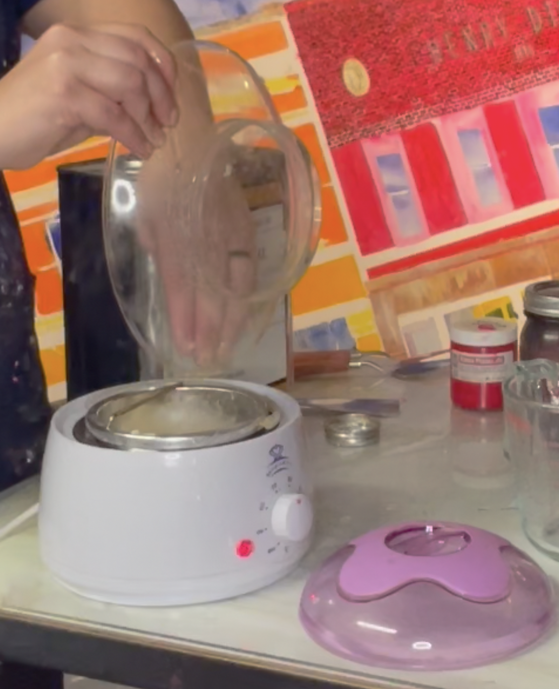
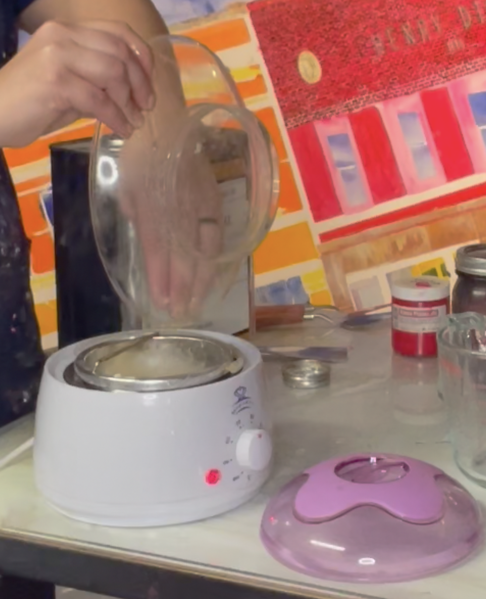
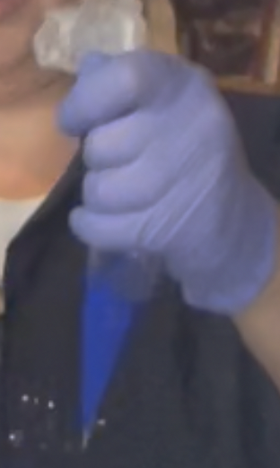
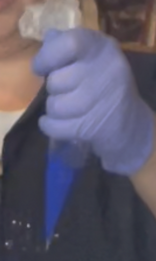
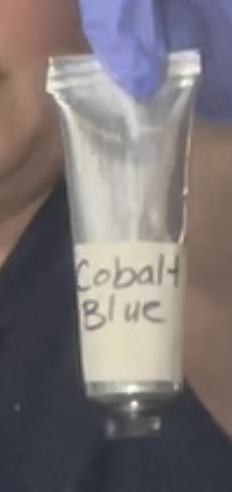
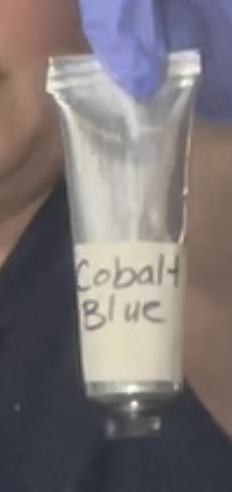

Paint Medium
- Cold-Pressed or Alkali-Refined Linseed or Walnut Oil
- White Beeswax
- Heat Source
- Liquid Measuring Cup
- Weight Scale
- Glass Container for Finished Medium
Oil Paint
- Muller
- Glass Slab
- Respirator
- Safety Glasses
- Latex Gloves
- Putty Knife
- High Quality Pigment
- Oil Paint Medium
- Metal Tubes or Glass Jars for Storing Finished Paint
- Pastry Bags
- Toothpaste Squeezer
Cleaning Supplies
- Vegetable Oil
- Simple Green Cleaner
- Rags
- Latex Gloves

 



 


 
